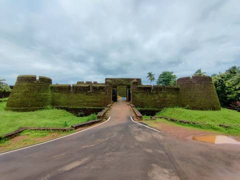
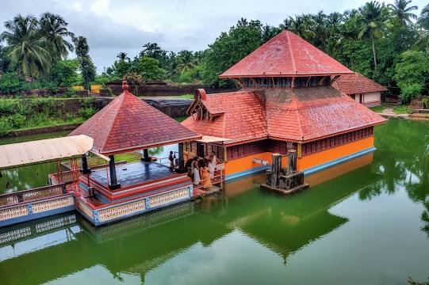
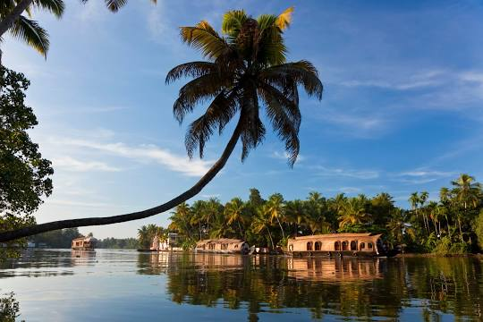

Bekal Fort
Bekal Fort is a medieval fort built by Shivappa Nayaka of Keladi in 1650 AD, at Bekal. It is the largest fort in Kerala, spreading over 40 acres.
Ananthapura Lake Temple
Ananthapadmanabhaswamy Temple or Ananthapura Lake Temple is a Hindu temple built in the middle of a lake in the little village of Ananthapura, around 6 km from the town of Kumbla in Manjeshwaram Taluk of Kasaragod District of Kerala, South India.
Valiyaparamba
Valiyaparamba is a coastal island in Hosdurg taluk, Kasaragod district, Kerala state, India.
Ranipuram

Ranipuram is a village and a major tourist attraction in the Kasaragod district of the Indian state of Kerala. It is located near Talakaveri Wildlife Sanctuary in Kerala-Karnataka border. Situated at 1,048 metres above mean sea level, Ranipuram is 48 km from the nearest city Kanhangad and 107 km from the major port city of Mangalore.